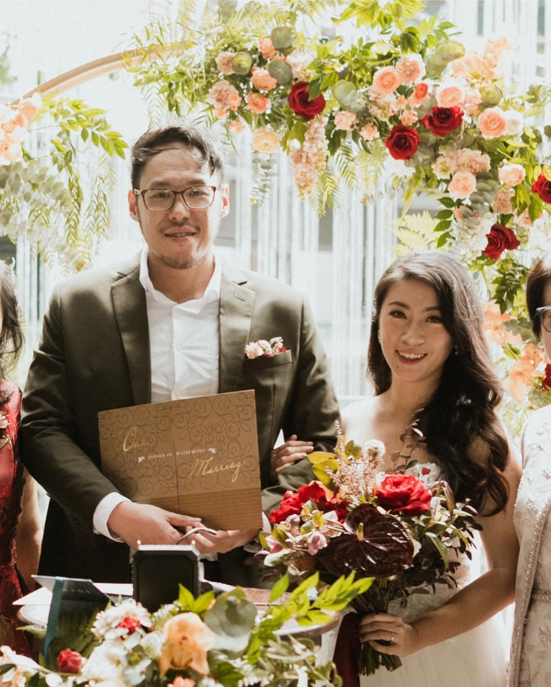

A proposal prepared for
For the podcast producer who has already built the body of work - and is ready for the world to finally see it clearly.
01 / 06

You've been building this for seven years. Not casually - deliberately. You burned an earlier version of the business down and rebuilt it from scratch. You've rebranded your podcast three times, each time returning to the same question that won't leave you alone:
That question isn't restlessness. That's intellectual rigor. You have eight peer-reviewed publications. You left a PhD because academia was too slow, too insulated from the world you actually want to shape. Now you're doing the same work - interrogating ideas, stress-testing frameworks - but through a microphone instead of a journal.
And you're doing it alone. Editing every episode yourself. Running SIGNATURE workshops, producing corporate rounds for IMH and the Singapore Sleep Society, moderating panels at FLAsia and AIFA, hosting Thrive and Vibe SG, organizing Pen and Paper Time meetups at bars in central Singapore.
Here's what I noticed: you use the phrase "body of work" constantly. Not "content." Not "posts." Body of work. That's not a content strategy term. That's what a researcher says when they mean something that will outlast the moment it was made in.
You're not trying to go viral. You're trying to build something that compounds. You said it yourself:
The challenge is: your Instagram isn't compounding the way the rest of your work is. And I think I know why.
02 / 06
Observation 01
Your top-performing original posts are personal: the LDR-to-marriage milestone, the business 5th birthday, the Vancouver photo dump. They pull 60-130+ likes. Your podcast education carousels - which make up around 30% of your feed - average closer to 15-25 likes. This is not a coincidence and it's not a problem with the education content itself. It's a blend issue. The posts that perform best are the ones where you - the researcher-turned-producer who burned a business down and rebuilt it - show up in the content. The show concept content works best when Cheryl is in the story, not just the thesis.
Data: avg likes on personal posts ~75 vs avg likes on pure educational carousel ~22. Top organic original post: LDR milestone at 267 likes.
Observation 02
You have a 2x Asia Podcast Awards winning show - EDIT HISTORY - and you're now rebranding it to feature academics and researchers stress-testing their own theses. That is genuinely differentiated content. But your Reels average only 497 views, and you've posted just 16 of them across 100 posts. Meanwhile, a 60-second clip of a guest answering "where is your thesis under pressure today?" could reach audiences who have never heard of your show. The raw material is already being created. It's just not being activated on the platform where discovery happens.
Data: 71% carousels, 16% Reels. Reel avg views: 497 vs industry benchmark of 2,000-5,000+ for a niche creator. Podcast content not being cross-posted.
Observation 03
You produced a corporate roundtable for the Institute of Mental Health. You hosted podcast recording sessions for the Singapore Sleep Society with six medical experts. You moderated at AIFA 2026. These are not side projects - they're the core of a corporate production arm that commands premium pricing. But scroll your Instagram and you'd think you're primarily a podcast coach for individual creators. The brands that need you most - marketing directors at Singapore SMEs, comms teams at associations - aren't finding you here because the work you're doing for them isn't being told as a story.
Ref: https://www.instagram.com/p/DJZX4JCyJDY/ (IMH post: high-quality storytelling, 70 likes - one of your stronger performing professional posts.)
03 / 06
Investment: on request
Investment: on request
Investment: on request
Investment: on request
04 / 06
Before writing this, I read through 20+ of your captions in full - not to copy the topics, but to understand the rhythm. How you open. Which words you reach for. Where you put the turn. The goal was to write something that sounds like you sat down and wrote it - not like someone wrote "for" you.
Format: 5-slide carousel. Topic: a fresh angle on the concept-vs-content distinction you've been building your positioning around - but from an angle you haven't taken yet.
Sample Carousel - "The real reason your podcast isn't growing"
I wrote this sample after reading 20+ of your captions in full. I deliberately mirrored how you write - the sentence rhythm, the opening move (bold declarative that challenges conventional wisdom), the turn in the middle, the "here's the difference" structure, your closing line. If we work together, every piece of content would go through this same process before it reaches you. You'd never get something that sounds like a social media manager wrote it.
05 / 06
06 / 06
No pressure, no pitch deck. Just a DM if something here landed - and we can go from there.
DM me on Instagram